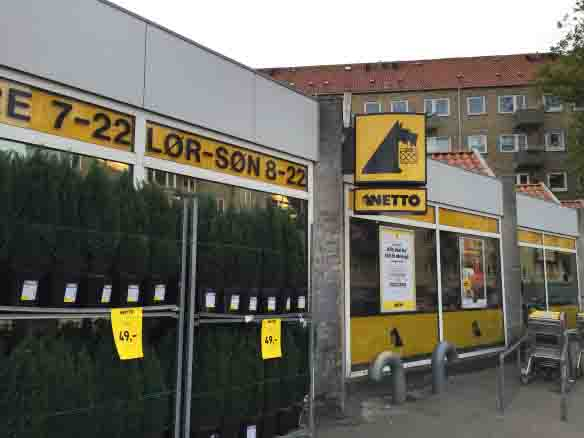
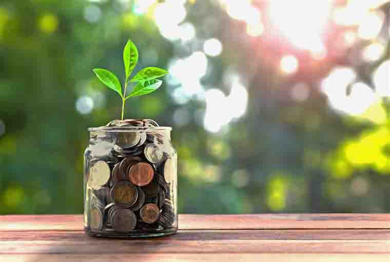

Guide to Danish Supermarkets

Coming from a country where the supermarket scene is dominated by a handful of players, Denmark (and certainly Copenhagen) seems to have more supermarket chains. But most except Aldi, Lidl and Rema 1000 are owned by three companies with two – COOP DK and Dansk Supermarked A/S owning the most.
On the whole you will find the same kind of products in all the supermarkets here with a small amount of differentiation but in some cases a great difference in price. Most in the city are pretty small supermarkets by British or American standards with the exception of Bilka at Fields and Meny at the Rotunda in Hellerup. Føtex and Kvickly also have larger stores
‘Posh’ supermarkets – Irma and Meny
By this I mean the ones that sell a more upmarket range of products and can have the price tag to match, in many cases on everyday products. I like to buy food from these stores at times. I like the quality of Irma products but there isn’t a very wide selection and Meny also has probably the widest selection of groceries in the city.
If you are looking for English or American foods or an experience that is closer to these country’s supermarkets then a visit to Meny at the Rotunda is for you. This is the only supermarket location to have dual signage in English and Danish as 25% of the customers are expats. You will find a cheese, fish, meat and deli counter in this store too, something that is rare in other supermarket chains.
Bigger Supermarkets – Kvickly, Føtex, Bilka, Super Brugsen
These are the ones with larger stores offering more than just food with clothing and homeware sections. Kvickly is the biggest bike seller in Denmark and a great place to get affordable kids’ bikes. Much the same selection of daily groceries as the discount supermarkets but a wider and more reliable selection. The exception is Bilka at Fields which is the closest you will get to a hypermarket type store here.
Discount Supermarkets – Fakta, Netto, Aldi, Lidl, Rema 1000

Discount supermarkets here are not to be sniffed at. They are still nicely laid out, clean and tidy and in recent years have offered the same selection of food and household cleaning items as the other stores but at a lower price. I tend to do most of my shopping at Netto, Aldi and Kiwi.
The specials they carry in Netto are particularly good both on food and toys etc. One thing, don’t expect to find the same special products in again so destroyer tactics are always worth considering especially on special shampoos for example. I find Lidl at little disappointing for everyday groceries but it may be the ones I have been to. Aldi’s face creams are amazing too!
Other things to note
There isn’t the same kind of loyalty card system here as in the UK but you can collect stickers in some stores such as Netto to buy some special products at a discount (currently it is Rituals products) and some also give away little packs of themed cards for kids to collect (a very cynical marketing ploy). You can also get members cards, which you may pay for in the first instance, and then get discounts in store with them. I know that Kvickly and Kiwi offer these.
Hard alcohol/spirits are not on the shelves in the supermarkets and you need to go to the kiosk at the front of the big stores or ask at the till in smaller ones for these drinks.
There are, of course, lots of little greengrocers around the city and I favour these for my fresh fruit and veg if I can.
To get an idea of the type of products, prices and discounts in the supermarkets near you the aviser – either the ones through your door or the online versions if you want to save trees – are invaluable.
Discounts here are a cut in the normal price not bulk buying.